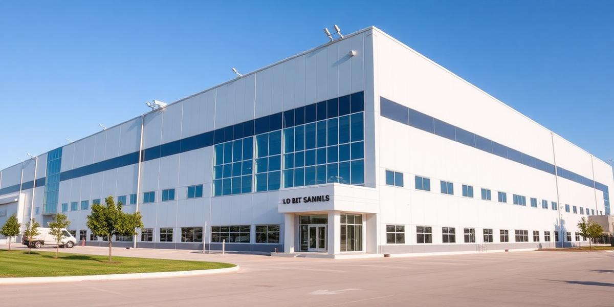

Arzoo Textile Mills Ltd. is one of the leading textile manufacturers and exporters based in Faisalabad, Pakistan. The company specializes in manufacturing and exporting a wide range of textile products including woven fabrics, home bed linen, institutional textiles, bath linen, curtains, and kitchen accessories.
The company was founded by Haji Abdul Majeed Sheikh, who migrated from Calcutta in the 1930s and established a textile trading business. The Sheikh family gradually expanded their operations and established offices in New York, London, and Italy, building a strong international presence in the global textile market.
Today, Arzoo Textile Mills is a vertically integrated textile manufacturer with state-of-the-art manufacturing facilities including weaving, bleaching, mercerizing, printing, dyeing, CAD & engraving, stitching, and quilting units. The company is committed to providing the highest quality products while maintaining strict environmental standards.

We are committed to providing highest quality products through continuous improvement and state-of-the-art manufacturing processes.
We follow a strict environmental protection programme to minimize our ecological footprint and promote sustainable manufacturing.
We believe our employees are our greatest asset and invest in their training, development, and well-being.
Our mission is to exceed customer expectations through innovation, reliability, and responsive service.
Haji Abdul Majeed Sheikh migrates from Calcutta and establishes a textile trading business.
Expansion of trading operations with offices established in New York, London, and Italy.
Transition from trading to textile manufacturing in Faisalabad, Pakistan.
Vertical integration with weaving, dyeing, printing, and stitching capabilities.
Arzoo Textile Mills Ltd. operates as a fully integrated manufacturer and exporter serving global markets.